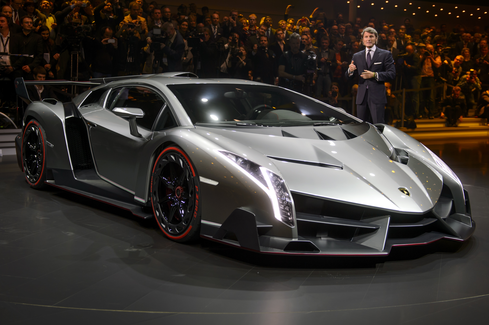

| Home | About us | Contact us | Subscribe us |
|---|
Automobili Lamborghini S.p.A. (Italian: [lambor'gi?ni] ( listen)) is an Italian brand and manufacturer of luxury sports cars and, formerly, SUVs, which is owned by the Volkswagen Group through its subsidiary brand division Audi. Lamborghini's production facility and headquarters are located in Sant'Agata Bolognese Italy. In 2011, Lamborghini's 831 employees produced 1,711 vehicles. Manufacturing magnate Italian Ferruccio Lamborghini founded Automobili Ferruccio Lamborghini S.p.A. in 1963 to compete with established marques, including Ferrari. The company gained wide acclaim in 1966 for the Miura sports coupé, which established rear mid-engine, rear wheel drive as the standard layout for high-performance cars of the era. Lamborghini grew rapidly during its first decade, but sales plunged in the wake of the 1973 worldwide financial downturn and the oil crisis. The firm's ownership changed three times after 1973, including a bankruptcy in 1978. American Chrysler Corporation took control of Lamborghini in 1987 and sold it to Malaysian investment group Mycom Setdco and Indonesian group V'Power Corporation in 1994. In 1998, Mycom Setdco and V'Power sold Lamborghini to the Volkswagen Group where it was placed under the control of the group's Audi division. New products and model lines were introduced to the brand's portfolio and brought to the market and saw an increased productivity for the brand Lamborghini. In the late 2000s, during the worldwide financial crisis and the subsequent economic crisis, Lamborghini's sales saw a drop of nearly 50 percent. Lamborghini produces sports cars and V12 engines for offshore powerboat racing. Lamborghini currently produces the V12-powered
| industry | Private |
| Industry | Automobile manufacturing |
| Fate | Acquired by Audi AG |
| Founders | |
| Area served | World wide |
| Products | Sports cars |
History Main article: History of Lamborghini Manufacturing magnate Italian Ferruccio Lamborghini founded the company in 1963 with the objective of producing a refined grand touring car to compete with offerings from established marques such as Ferrari. The company's first models were released in the mid-1960s and were noted for their refinement, power and comfort. Lamborghini gained wide acclaim in 1966 for the Miura sports coupé, which established rear mid-engine, rear wheel drive as the standard layout for high-performance cars of the era. Lamborghini grew rapidly during its first decade, but sales plunged in the wake of the 1973 worldwide financial downturn and the oil crisis. Ferruccio Lamborghini sold ownership of the company to Georges-Henri Rossetti and René Leimer and retired in 1974. The company went bankrupt in 1978, and was placed in the receivership of brothers Jean-Claude and Patrick Mimran in 1980. The Mimrans purchased the company out of receivership by 1984 and invested heavily in the company's expansion. Under the Mimrans' management, Lamborghini's model line was expanded from the Countach to include the Jalpa sports car and the LM002 high performance off-road vehicle. The Mimrans sold Lamborghini to the Chrysler Corporation in 1987. After replacing the Countach with the Diablo and discontinuing the Jalpa and the LM002, Chrysler sold Lamborghini to Malaysian investment group Mycom Setdco and Indonesian group V'Power Corporation in 1994. In 1998, Mycom Setdco and V'Power sold Lamborghini to the Volkswagen Group where it was placed under the control of the group's Audi division. New products and model lines were introduced to the brand's portfolio and brought to the market and saw an increased productivity for the brand Lamborghini. In the late 2000s, during the worldwide financial crisis and the subsequent economic crisis, Lamborghini's sales saw a drop of nearly 50 percent.
Products Automobiles Main article: List of Lamborghini automobiles As of the 2014 model year, Lamborghini's automobile product range consists of two model lines, both of which are mid-engine two-seat sports cars.[14] The V12-powered Aventador line consists of the LP 700–4 coupé and roadster.[15] The V10-powered Huracán line currently includes only the LP 610-4 coupé.[citation needed] Marine engines Motori Marini Lamborghini produces a large V12 marine engine block for use in World Offshore Series Class 1 powerboats. A Lamborghini branded marine engine displaces approximately 8,171 cc (499 cu in) and outputs approximately 940 hp (700 kW).[16] Branded merchandise Lamborghini licenses its brand to manufacturers that produce a variety of Lamborghini-branded consumer goods including scale models, clothing, accessories and electronics.[17]
| Model | Price |
|---|---|
| Lamborghini veneno Roadster | 5600000$ |
| Lamborghini Aventador | 2800000$ |
| Lamborghini Reventon | 2200000$ |
| Lamborghini Garlado | |
| Huracan | |